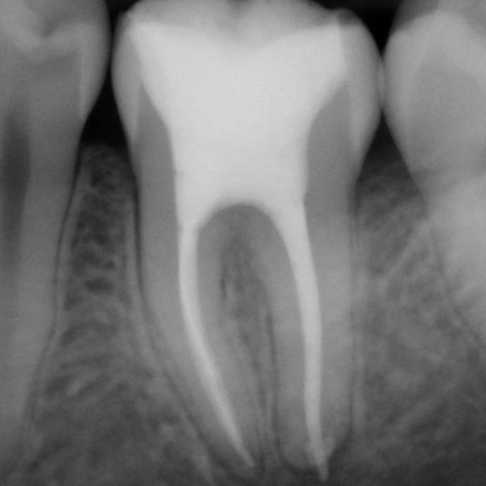
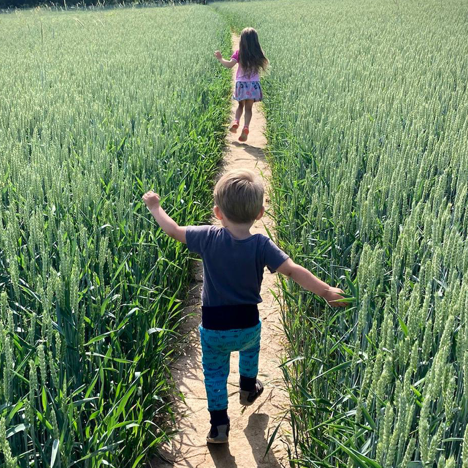
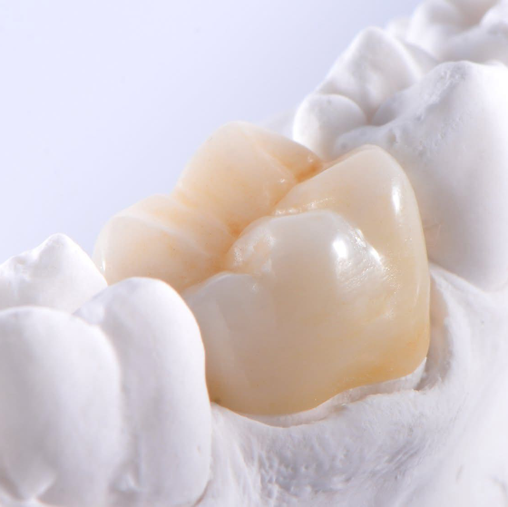
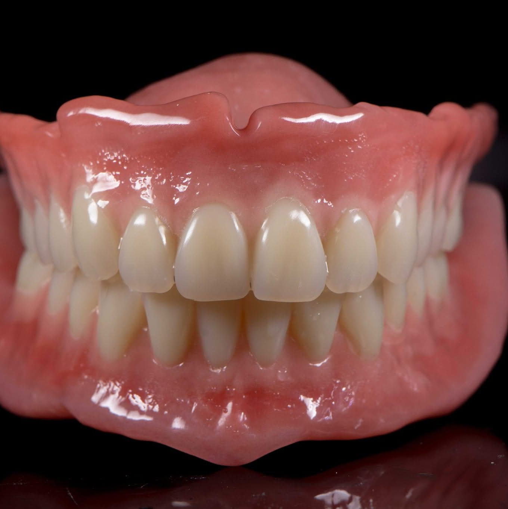

Dent
optima
Naše služby

Dentální hygiena
Instruktáž dentální hygieny je jediný opravdu účinný způsob, jak vás můžeme nejen léčit, ale skutečně vyléčit.
Více se dozvíte v sekci hygiena.

Výplně
V naší ordinaci se zaměřujeme na moderní fotokompozitní “bílé” výplně. Jedná se o vysoce estetický a dlouhodobě funkční způsob náhrady ztracených zubních tkáni ať už kazem či úrazem.
Správný postup je technologick náročnější než u dříve používaných amalgamových výplní a vyžaduje naprosto suché pracovní pole během zákroku. Samozřejmostí je proto izolace pracovního pole kofferdamovou blánou.
Ošetření je tak pro pacienta také komfortnější. Pokud nám během výkonu usnete na křesle, bereme to jako pochvalu, kterou nás vždy potěšíte 😊

Endodoncie
Endodoncie je specializovaná oblast zubního lékařství, která se zaměřuje na ošetření vnitřní části zubu - zubní dřeně.
Zubní dřeň v sobě obsahuje nervy a cévy a pokud již dojde k jejímu nevratnému poškození v důsledku nejčastěji hlubokého kazu či úrazu, je potřeba provést právě endodontické ošetření. (Laicky označované jako ošetření kořenových kanálků.) Jedná se o zprůchodnění kořenových kanálků, jejich řádnou dezinfekci a následné hermetické uzavření, aby se zabránilo opětovnému osídlení bakteriemi a vzniku opakované infekce.
Řádně zaplněný zub je sice křehčí, než zub s vitální zubní dření, je-li však ošetřen korunkou, může sloužit jako plnohodnotný zub desítky let.

Dětská péče
Naše ordinace se zaměřuje na rodinnou péči a přijímáme pouze děti, jejichž alespoň jeden rodič, žijící s nimi ve společné domácnosti, je naším pacientem. Věříme, že rodič, který se naučí správně pečovat o své zuby, dokáže zajistit zdraví a bezproblémový vývoj zubů svého dítěte.
Doporučujeme, aby děti přišly do ordinace spolu s rodičem co nejdříve, ideálně ještě před prořezáním prvního zoubku.
Rajský plyn ani jiné formy analgosedace v naší ordinaci nenabízíme. V případě potřeby delegujeme na jiné pracoviště.
Opravu zoubku však často v klidu zvládají děti již od 4 let.

Fixní protetika
Pokud je rozsah poškození zubu již natolik veliký, že jej nelze řešit jen výplní, tak se zub nabrousí a otiskne. V zubní laboratoři pak zubní technik na modelu zhotoví nepřímou náhradu (tedy korunku či polokorunku - onaly nebo overlay). Tu poté zubní lékař na nabroušený zub nalepí a tím se plně obnoví tvar i funkce zubu.
Někdy lze několika spojenými korunkami nahradit i chybějící zub - v tom případě mluvíme o můstku.

Snímatelná protetika
Pokud už jste o své zuby v minulosti přišli, můžeme Vám nabídnout zhotovení snímacích náhrad. Ať už částečných skeletových náhrad, které doplňují některé chybějící zuby a nebo náhrad celkových.
U celkových náhrad postupujeme moderní metodou BPS (Biofunctional prosthetic system), která díky speciálním postupům umožňuje otiskování sliznice při zavřených ústech. U BPS protéz se nám tak daří dosahovat mnohem lepšího sání a stability protézy v ústech, než u protéz zhotovených běžnými postupy.
Služby, které na našem pracovišti neposkytujeme
V případě potřeby delegujeme ke spolupracijícím kolegům
Paradontologie
Stomatohirurgie
Reendodoncie pod mikroskopem
Implatologie
Dentoptima s.r.o.

605 278 068

dentoptima@seznam.cz